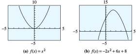
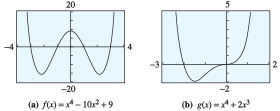

where \(a_0\text{,}\) \(a_1\text{,}\) \(a_2\text{,}\) \(\ldots\text{,}\) \(a_n\) are constants and \(a_n \ne 0\text{.}\)
The parts making up the polynomial function which are of the form \(a_ix^i \) for some \(i \) are called terms. The term \(a_nx^n \) is call the leading term.
The coefficient \(a_n\) of the highest power term is called the leading coefficient.
The power of \(x \) appearing in the leading term (in this case \(n \)), is the degree of the polynomial.
Each of the polynomials above is written in descending powers, which means that the highest-degree term comes first, and the degrees of the terms decrease from largest to smallest. Sometimes it is useful to write a polynomial in ascending powers, so that the degrees of the terms increase. For example, the polynomial \(f(x)\) above would be written as
In Example 309a, we multiplied a polynomial of degree 1 by a polynomial of degree 3, and the product was a polynomial of degree 4. In Example 309b, the product of three first degree polynomials is a third-degree polynomial.
Degree of a Product
The degree of a product of nonzero polynomials is the sum of the degrees of the factors. That is,
if \(P(x)\) has degree \(m\) and \(Q(x)\) has degree \(n\) (and both \(P(x)\) and \(Q(x)\) are nonzero), then their product \(P(x)Q(x)\) has degree \(n + m\text{.}\)
Example311
Let \(P(x) = 5x^4 - 2x^3 + 6x^2 - x + 2\text{,}\) and \(Q(x) = 3x^3 - 4x^2 + 5x + 3\text{.}\)
What is the degree of their product? What is the coefficient of the lead term?
Find the coefficient of the \(x^3\)-term of the product.
The degree of \(P\) is \(4\text{,}\) and the degree of \(Q\) is \(3\text{,}\) so the degree of their product is \(4 + 3 = 7\text{.}\) The only degree \(7\) term of the product is \((5x^4)(3x^3) = 15x^7\text{,}\) which has coefficient \(15\text{.}\)
In the product, each term of \(P(x)\) is multiplied by each term of \(Q(x)\text{.}\) We get degree \(3\) terms by multiplying together terms of degree \(0\) and \(3\text{,}\) or \(1\) and \(2\text{.}\) For these polynomials, the possible combinations are:
\(P(x)\)
\(Q(x)\)
Product
\(2\)
\(3x^3\)
\(6x^3\)
\(-2x^3\)
\(3\)
\(-6x^3\)
\(-x\)
\(-4x^2\)
\(4x^3\)
\(6x^2\)
\(5x\)
\(30x^3\)
The sum of the third-degree terms of the product is \(34x^3\text{,}\) with coefficient \(34\text{.}\)
Find the coefficient of the fourth-degree term of the product of \(f(x) = 2x^6 + 2x^4 - x^3 + 5x^2 + 1\) and \(g(x) = x^5 - 3x^4 + 2x^3 + x^2 - 4x - 2\text{.}\)
SubsectionClassifying Polynomials by Degree
The graph of a polynomial function depends first of all on its degree. We have already studied the graphs of polynomials of degrees \(0\text{,}\) \(1\text{,}\) and \(2\text{.}\)
A polynomial of degree \(0\) is a constant, and its graph is a horizontal line. An example of such a polynomial function is \(f(x) = 3\) (see Figure 313a).
A polynomial of degree \(1\) is a linear function, and its graph is a straight line. The function \(f(x) = 2x - 3\) is an example of a polynomial of degree \(1\text{.}\) (See Figure 313b.)
Figure313
Quadratic functions, such as \(f(x) = -2x^2 + 6x + 8\text{,}\) are polynomials of degree \(2\text{.}\) The graph of every quadratic function is a parabola, with the same basic shape as the standard parabola, \(y = x^2\text{.}\) (See Figure 314.) Notice that the graph changes from increasing to decreasing or vice versa at one point. This point of a parabola is the same as its vertex (which we defined in section 10.2).
Figure314
SubsectionCubic Polynomials
Do the graphs of all cubic, or third-degree, polynomials have a basic shape in common? We can graph a few examples and find out. Unlike the basic parabola, the graph of \(y = x^3\) is always increasing. At the origin, however, it changes from concave down to concave up. A point where the graph changes concavity is called an inflection point. You do not need to concern yourself with concavity and inflection points in this course. However, if you continue on to Calculus, this definition will appear again!
Example315
Graph the cubic polynomial \(P(x) = x^3 - 4x\) and compare its graph with that of the basic cubic, \(y = x^3\text{.}\)
The graph of the basic cubic is shown in Figure 316a. To help us understand the graph of the polynomial \(P(x) = x^3 - 4x\text{,}\) we will evaluate the function to make a table of values. We can do this by hand or use the Table feature on the graphing calculator.
Figure316
\(x\)
\(-3\)
\(-2\)
\(-1\)
\(0\)
\(1\)
\(2\)
\(3\)
\(P(x)\)
\(-15\)
\(0\)
\(3\)
\(0\)
\(-3\)
\(0\)
\(15\)
The graph of \(P(x) = x^3 - 4x\) is shown in Figure 316b. While the graph of \(P(x)\) does not look exactly like the graph of \(y=x^3\text{,}\) it is similar, especially at the edges of the graphs.
Despite the differences in the central portions of the two graphs, they exhibit similar long-run behavior.
For very large and very small values of \(x\text{,}\) both graphs look like the power function \(y = x^3\text{.}\)
The \(y\)-values increase from \(-\infty\) toward zero in the third quadrant, and they increase from zero toward \(+\infty\) in the first quadrant. Or we might say that the graphs start at the lower left and extend to the upper right.
All cubic polynomials display this behavior when their lead coefficients (the coefficient of the \(x^3\) term) are positive.
Both of the graphs in Example 315 are smooth curves without any breaks or holes. This smoothness is a feature of the graphs of all polynomial functions.
The domain of any polynomial function is the entire set of real numbers.
The graphs are shown in Figure 319. All the essential features of the graphs are shown in these viewing windows. The graphs continue forever in the directions indicated, without any additional twists or turns. You can see that the graph of \(f\) has three turning points, and the graph of \(g\) has one turning point.
Figure319
As in Example 315, both graphs have similar long-term behavior. The \(y\)-values decrease from \(-\infty\) toward zero as \(x\) increases from \(-\infty\text{,}\) and the \(y\)-values increase toward \(+\infty\) as \(x\) increases to \(+\infty\text{.}\) This long-term behavior is similar to that of the power function \(y = x^4\text{.}\) Its graph also starts at the upper left and extends to the upper right.
Complete the following table of values for \(Q(x) = -x^4 - x^3 - 6x^2 + 2\text{.}\)
\(x\)
\(-4\)
\(-3\)
\(-2\)
\(-1\)
\(0\)
\(1\)
\(2\)
\(3\)
\(4\)
\(y\)
\(\hphantom{000}\)
\(\hphantom{000}\)
\(\hphantom{000}\)
\(\hphantom{000}\)
\(\hphantom{000}\)
\(\hphantom{000}\)
\(\hphantom{000}\)
\(\hphantom{000}\)
\(\hphantom{000}\)
Graph \(y = Q(x)\) in the window \begin{align} \text{Xmin} \amp = -5 \amp\amp \text{Xmax} = 5\\ \text{Ymin} \amp = -15 \amp\amp \text{Ymax} = 10. \end{align} Compare the graph to the graphs in Example 318: What similarities do you notice? What differences?
In the exercises, you will consider more graphs to help you verify the following observations.
Long-Run Behavior of Polynomial Functions
A polynomial of odd degree (with positive leading coefficient) has negative \(y\)-values for large negative \(x\)-values and positive \(y\)-values for large positive \(x\)-values. In general, this type of polynomial will have a graph similar to graph (a) below.
A polynomial of even degree (with positive leading coefficient) has positive \(y\)-values for both large positive and large negative \(x\)-values. In general, this type of polynomial will have a graph similar to graph (b) below.